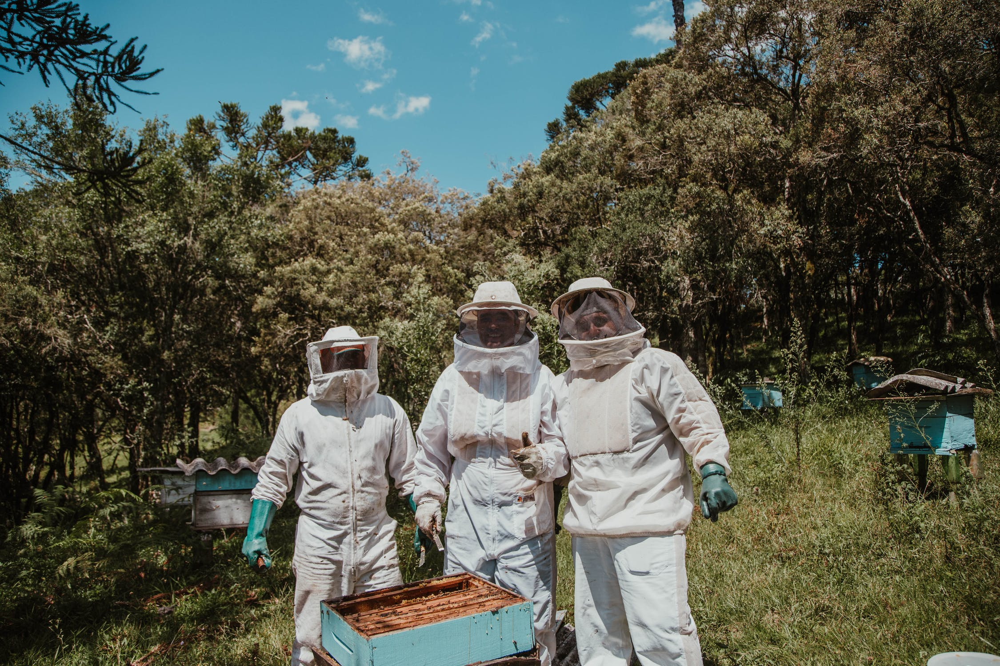
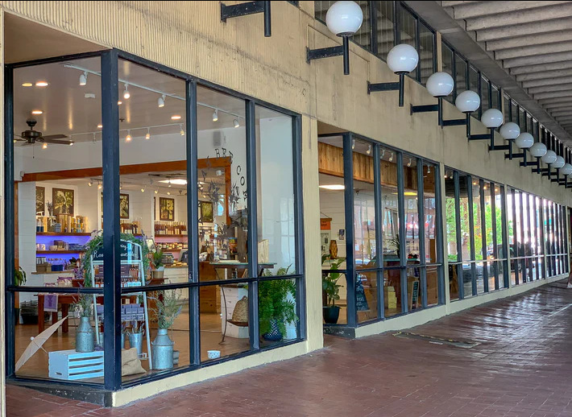
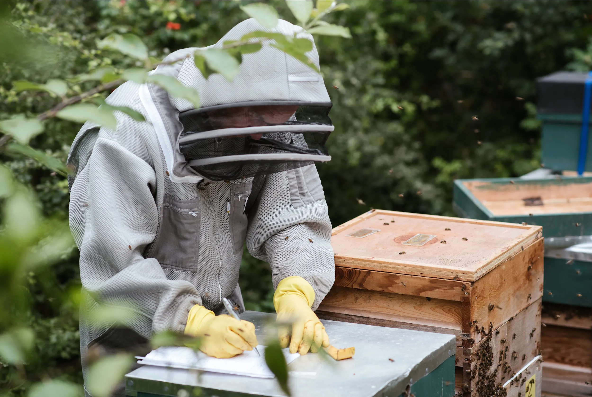

Гісторыя нашай пасекі
Усё пачалося з дзядулі Івана Анісімава, які першым заснаваў пчальнік у сям'і. Ён быў мудрым і дасведчаным пчаляром, які надаваў вялікую ўвагу якасці сваёй працы. Ён навучыў свайго сына, Мікалая, і ўнука, Аляксандра, усім тонкасцям пчалярства, перадаючы ім свае веды і каханне да пчол. Мікалай і Аляксандр працавалі плячом да пляча, каб пашырыць пчальнік Анісімавых. Яны ўвесь час эксперыментавалі з рознымі метадамі ўтрымання пчол і паляпшэнні ўмоў для іх развіцця.
Першая крама
Усё пачалося з дзядулі Івана Анісімава, які першым заснаваў пчальнік у сям'і. Ён быў мудрым і дасведчаным пчаляром, які надаваў вялікую ўвагу якасці сваёй працы. Ён навучыў свайго сына, Мікалая, і ўнука, Аляксандра, усім тонкасцям пчалярства, перадаючы ім свае веды і каханне да пчол. Мікалай і Аляксандр працавалі плячом да пляча, каб пашырыць пчальнік Анісімавых.


Дакументацыя
- Ветырынарна-санітарны пашпарт пасекі
- Пратаколы даследвання мёду па паказнікам якасці і бяспекі
- Вельмі важная паперка
- Умовы дагавору (аферты)
- Шчэ нейкая паперунька